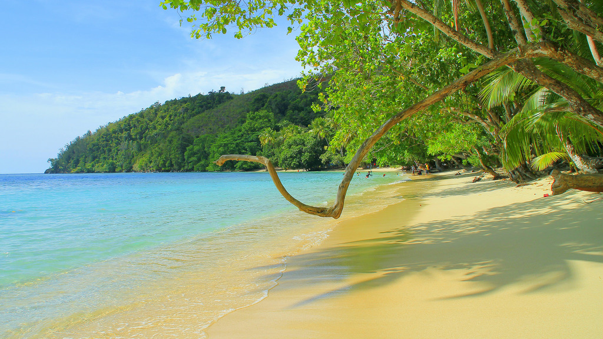
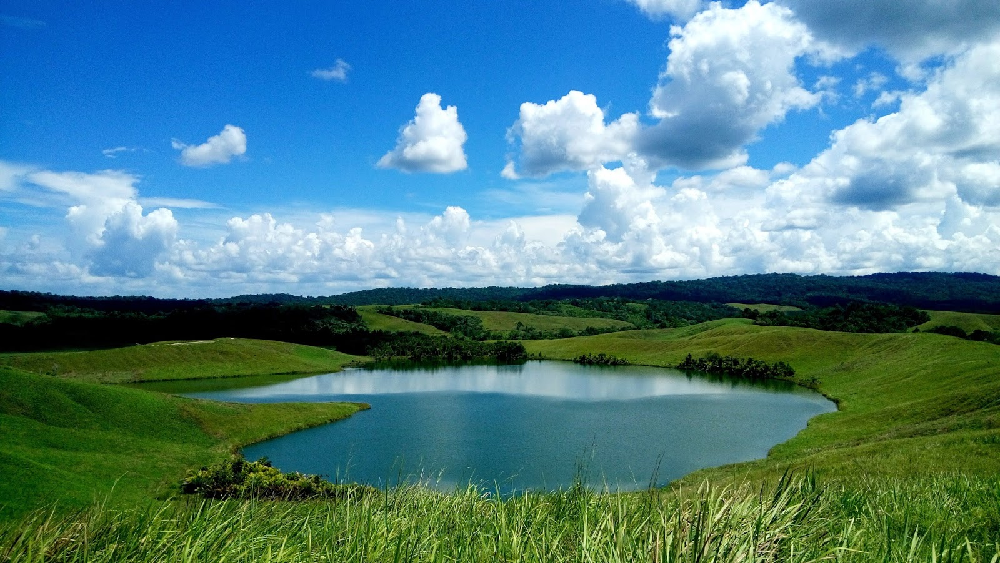
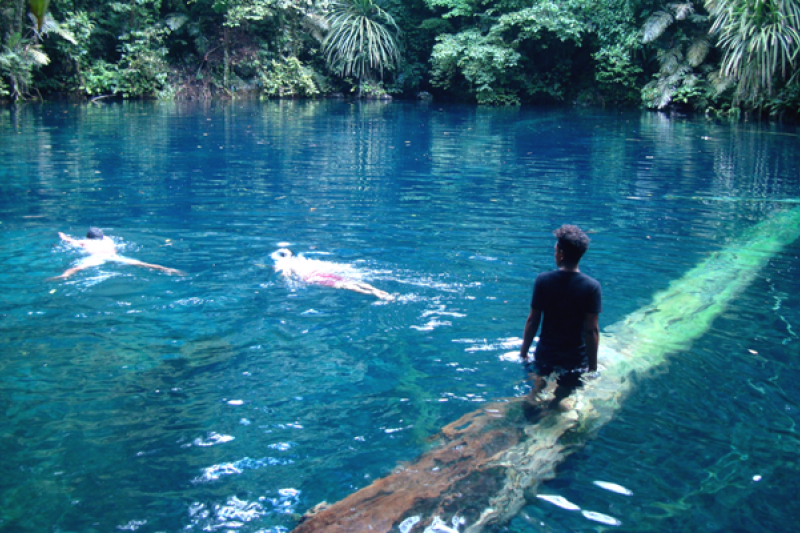
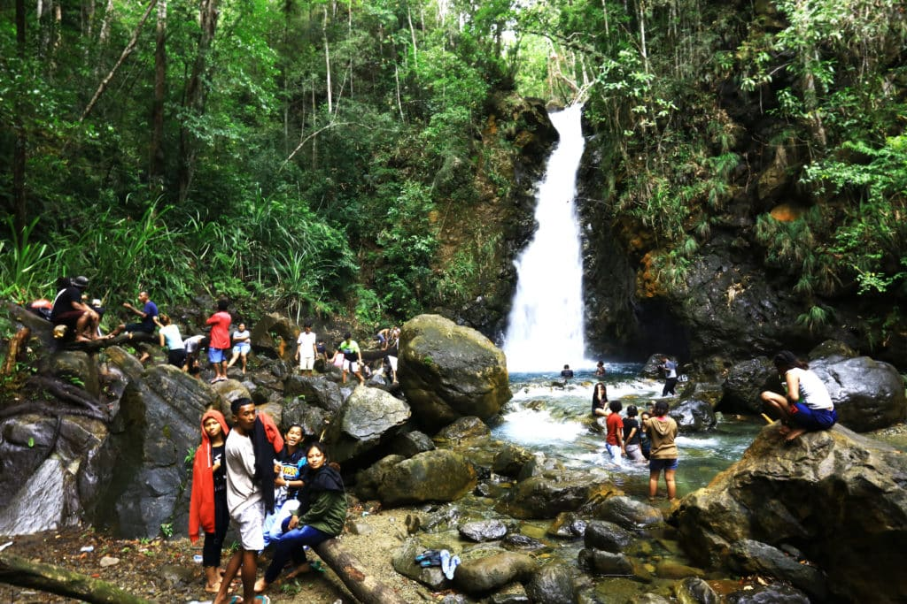

QUIZ PWEB
Home
Profile
Hometown
Food
Tourist
Tourist
Some tourist places in Jayapura

Harlem Beach is a tourist attraction located in Jayapura Regency, Papua, to be precise in Tablanusu Village, Depapre District.

The love lake is a beautiful heart-shaped lake that will be clearly seen from the hills around it. From the top of this hill is also the best spot to take photos with the lake as a background.

Kali Biru Genyem is a protected forest area which is also a breeding ground for other rare birds. With beauty and a quiet atmosphere, it will make the mind of tourists calm and peaceful.

This Kampung Harapan Waterfall is located in Sentani Regency, Jayapura. The process to get to this place is quite tiring. But take it easy, all of that will pay off in an instant with the stunning beauty of the Kampung Harapan Waterfall. The water is very cold and also heavy with a stretch of rocky cliffs that steeple around it.